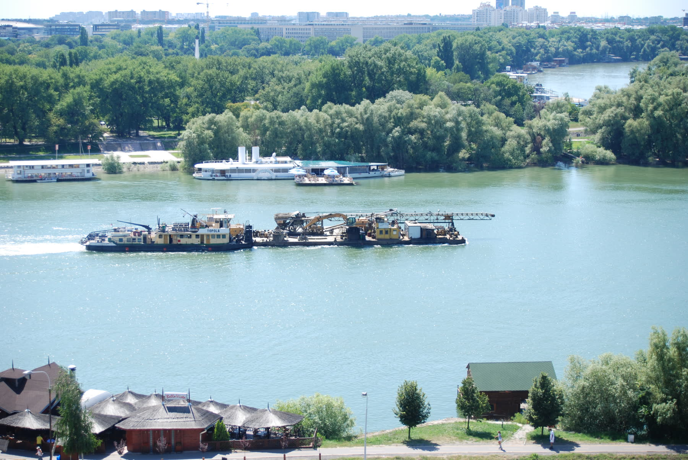
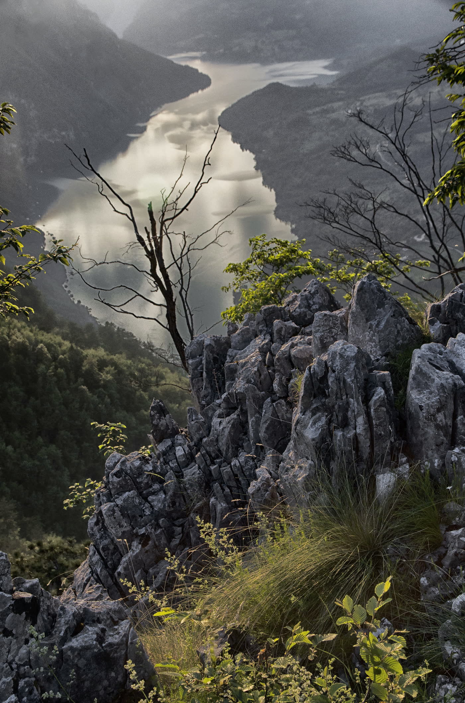

Отношения и выбор
Разобрать паузу в общении, сомнение перед решением, конфликт или новый контакт без давления.
Городская страница остается частью Confideline: приватный текстовый чат с консультантом по личному вопросу, локальный SEO-контекст и визуальный образ Сербии без копирования чужой продуктовой механики.

Страница сохраняет идею локальной SEO-структуры, но ведет пользователя в безопасный разговор с консультантом Confideline.
Разобрать паузу в общении, сомнение перед решением, конфликт или новый контакт без давления.
Задать свой вопрос и получить ответ от консультанта в приватном формате, без публичной активности.
Посмотреть ситуацию через натальную карту, синастрию, прогноз или астрокартографию.
Использовать контекст Сербии для вопросов об адаптации, внутреннем состоянии и личных переменах.

Визуальная роль фотографий - дать странице локальный сигнал: Белград как городской вход и Tara National Park как спокойный природный слой для темы выбора, восстановления и переезда.
В продакшене эти изображения можно заменить на утвержденные CMS main/cover photo, когда для Serbia и Belgrade появятся фото в Drive.
Confideline продает приватную консультацию, а не поиск человека из города. Страница города помогает пользователю быстро понять, что он может обратиться за эзотерической консультацией по личному вопросу, а локальный контекст Сербии остается частью SEO и атмосферы страницы.
Для Белграда это может быть вопрос об отношениях, выборе между двумя сценариями, возвращении к разговору, переезде, совместимости или эмоциональном состоянии после перемен. Консультант отвечает в текстовом чате и не дает жестких обещаний.
Пользователь выбирает контекст: отношения, совместимость, прогноз или переезд.
Переход ведет в регистрацию или существующий consultation flow, а не в каталог профилей.
Ответ остается человеческим, деликатным и ограниченным рамками консультации.
Блоки доверия должны поддерживать покупку консультации, а не повторять чужие продуктовые паттерны.
консультант отвечает по вашему вопросу, а не по общей заготовке
без подписки, кредитной путаницы и скрытого автосписания
отношения, сомнения и личные решения остаются в приватном чате
формулировки остаются поддерживающими, без гарантий и давления
Навигация остается внутренней SEO-сеткой. Тексты городов должны подставляться из CMS.